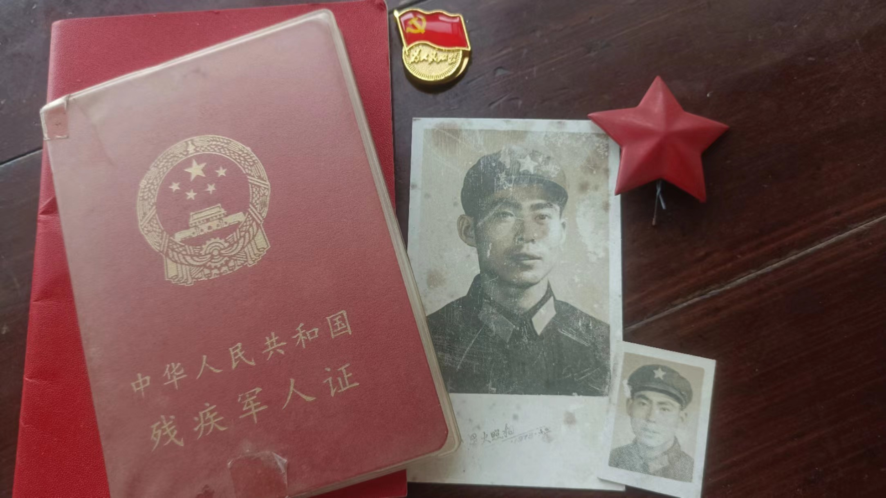
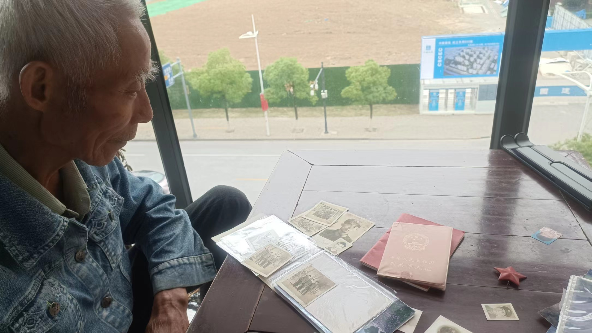
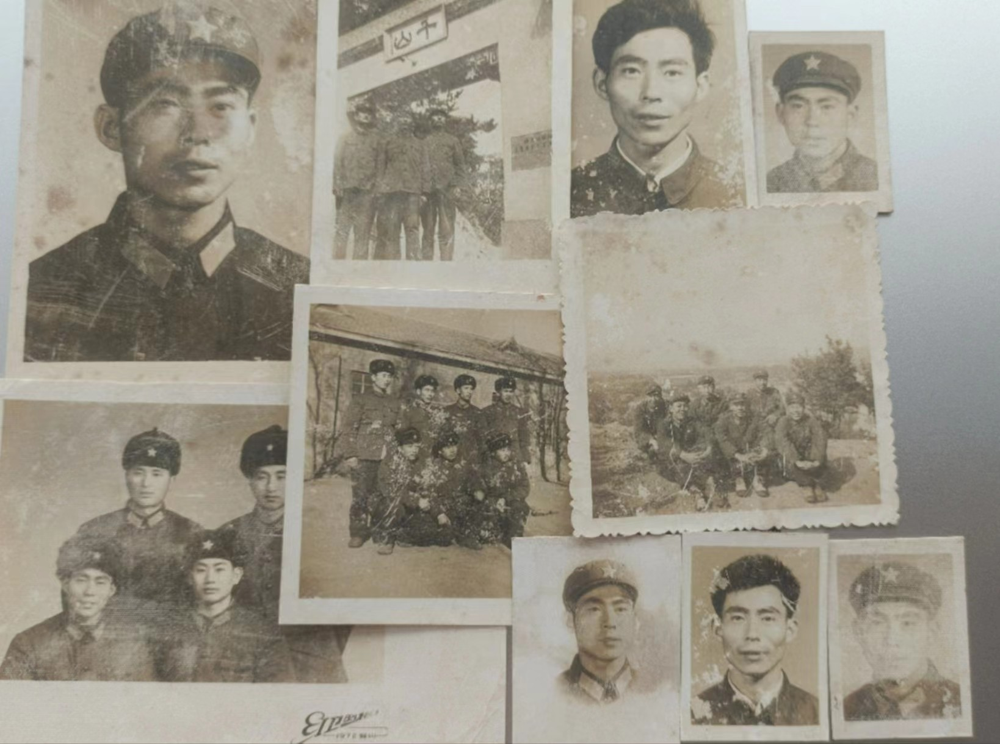
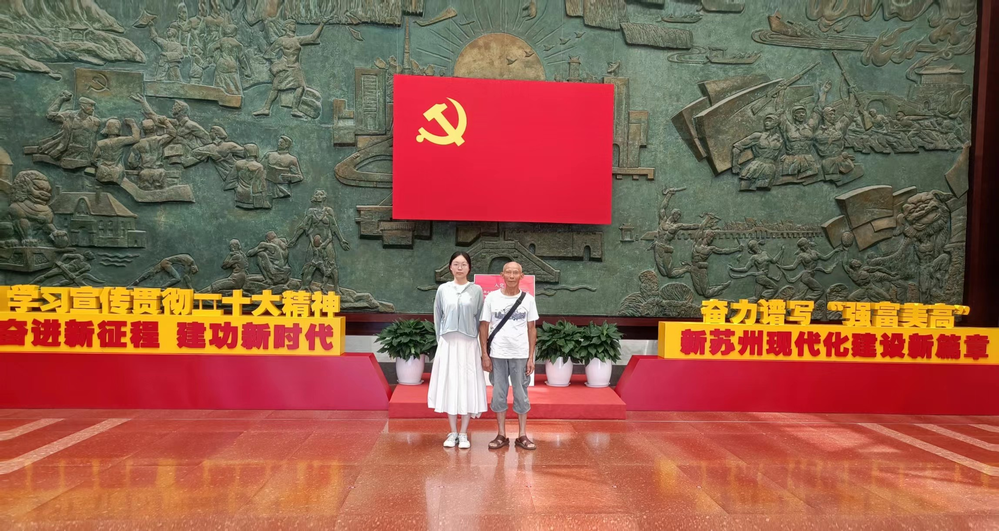
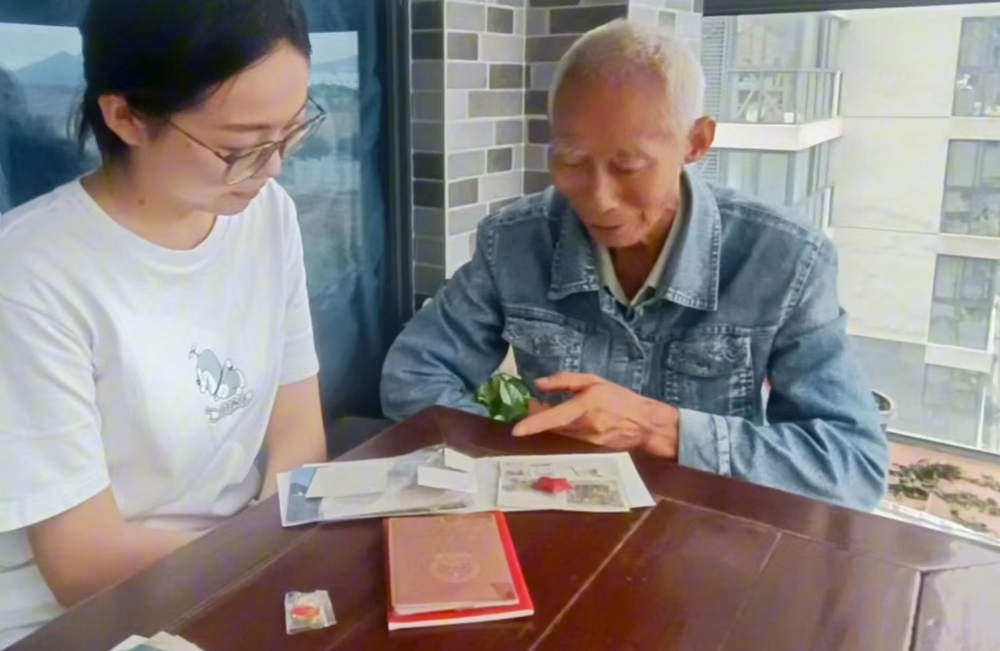
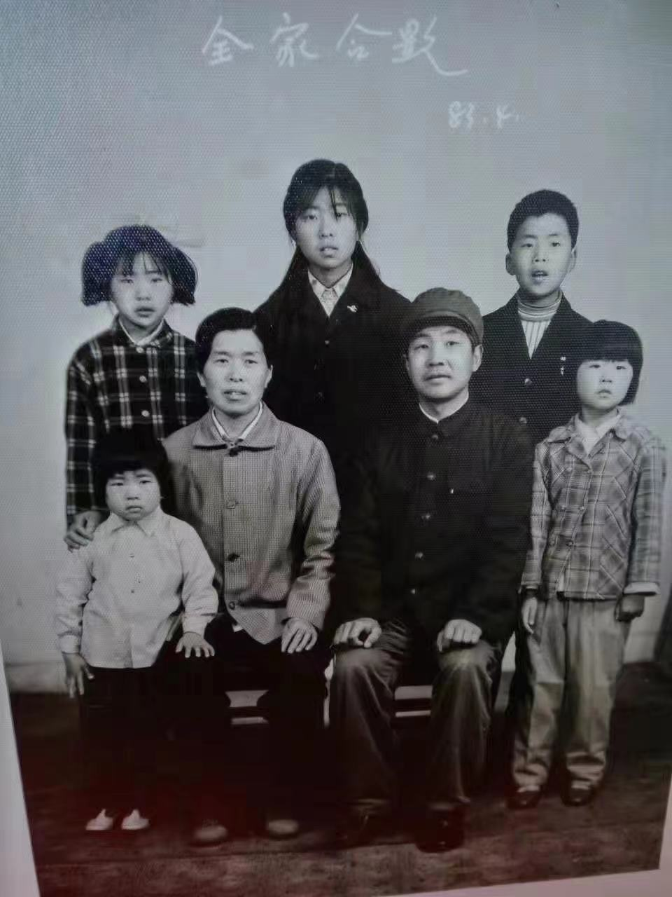
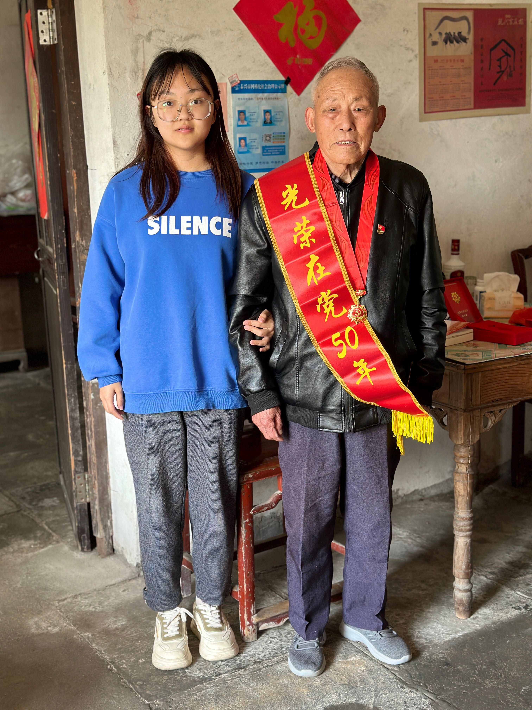
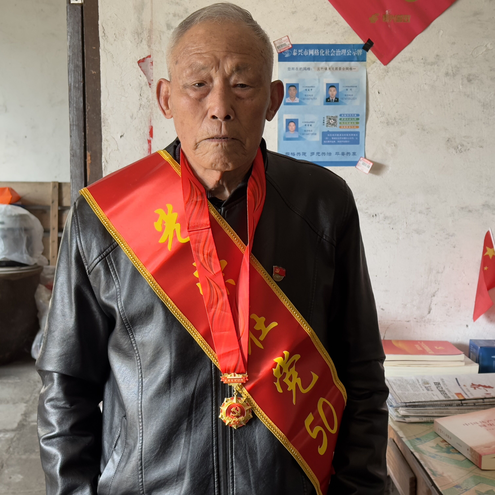
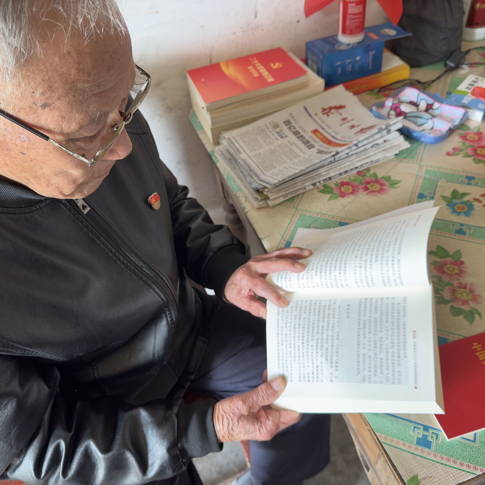

商务2201许珺怡 13806214821
采访地点：江苏省苏州市。
采访对象：许金祖，1947年2月17日出生，党员，1973年入党。
1969年至1974年于辽宁鞍山部队当兵，在空一师负责修无线电。
1969年和全国各地战友一起拍的老相片，至今保留着当年帽徽上的五角星，相片虽有褪色，五角星颜色也不再鲜亮，但在老兵们的心中永远熠熠生辉。
退伍之后回苏州在生产队务农，也在大队里做过会计，1974年复员，1976年进入大队作者志愿工作直至退休。
后因服役期间腰椎受伤，评定伤残七级，获中华人民共和国残疾军人证。
采访人:国贸2301徐皓月
联系方式:15077850869(电话)2441673566(qq)
采访地点:于南京市秦淮区家中
受访者:李士英，1941年生，党员
1966年因文化大革命被列入“重点审核”的对象,入党事宜被推迟的七年之久，但是七年时间不仅没有减弱她对党和国家的忠诚，而且锤炼了更坚定的党的意志。
当过针织厂女工干部，每日除了负责操作机床和巡查的工作，还负责单位里文化宣传的工作。
从针织厂退任以后当了居委会主任，把群众工作做的有理有条，直到正式退休。



国贸2302倪小又 17712005507
采访地点：江苏省徐州市。
采访对象：杨启昌，1942年10月出生，党员，1965年6月入党。
1960年1月，参加工作，就职于徐州市铜山县汉王卫生院。
1963年3月，入伍；1971年转业后，入职徐州市铜山县工业交通局。
1981年，于徐州市铜山县化工机械厂任厂长；1984年，调任徐州市铜山县夹河乡民政助理。
1997年，就任徐州市铜山县大彭镇调研员至2003年1月退休。
国贸2302周歆妍 15312986406
采访地点：江苏省泰州市泰兴市元竹镇姜八南路
采访对象：周礼美，汉族，1945年加入中国共产党。
入党前，他目睹国民党发国难财的行径，深刻认识到共产党才是真正爱国爱民、能带领人民走向解放的政党。
当时国民党反动派仍有势力，百姓生活不得安宁，怀着一腔热血，他勤锻炼、帮邻里。十几岁时，他担任儿童团团长，负责站岗、放哨、送信。 一次送信途中，他被国民党人绑架，对方威逼利诱，想让他做奸细，他宁死不屈。即便遭受拳打脚踢，仍死死护住藏有信件的背包。
此后，在土地改革等社会主义建设中，他积极响应号召，做群众思想工作。
如今，他依然坚持学习党的新思想，热心帮助身边人。
采访地点：江苏省泰州市泰兴市元竹镇姜八南路
采访对象：周礼美，汉族，1945年加入中国共产党。
入党前，他目睹国民党发国难财的行径，深刻认识到共产党才是真正爱国爱民、能带领人民走向解放的政党。
当时国民党反动派仍有势力，百姓生活不得安宁，怀着一腔热血，他勤锻炼、帮邻里。十几岁时，他担任儿童团团长，负责站岗、放哨、送信。 一次送信途中，他被国民党人绑架，对方威逼利诱，想让他做奸细，他宁死不屈。即便遭受拳打脚踢，仍死死护住藏有信件的背包。
此后，在土地改革等社会主义建设中，他积极响应号召，做群众思想工作。
如今，他依然坚持学习党的新思想，热心帮助身边人。


